Không gian nghỉ và trò chuyện cho hai người. Một bảng tổng thể và mười bảng đối tượng, cùng phong cách gỗ, đá kem, cây xanh và hoa hồng trắng. Bấm vào ảnh để mở bản gốc và phóng lớn.
Bảng tổng thể: Trước · Sau · Trái · Phải · Trên · Phối cảnh. Đối tượng: Trước · Sau · Trái · Phải · Trên · Dưới.
Ảnh tạo bằng imagegen để tham chiếu thiết kế, chưa phải mô hình GLB hoặc bản đo trực giao chính xác. Các góc khuất cần đối chiếu lại bằng camera từ mô hình khi dựng. Quy ước va chạm, lối đi, tỷ lệ và chữ tiếng Việt nằm trong hướng dẫn dựng 3D.
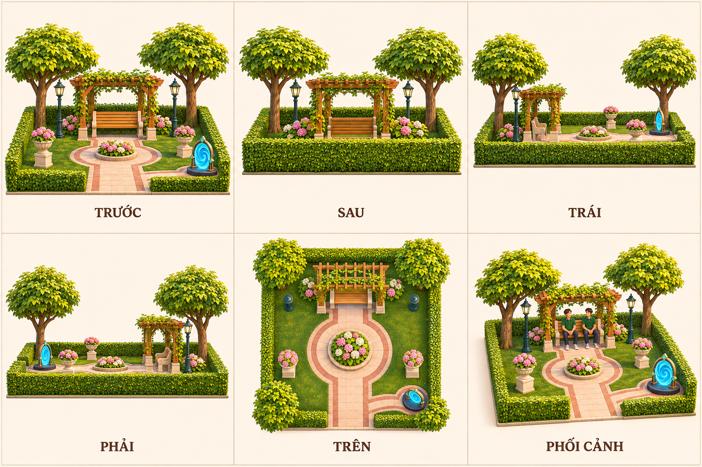
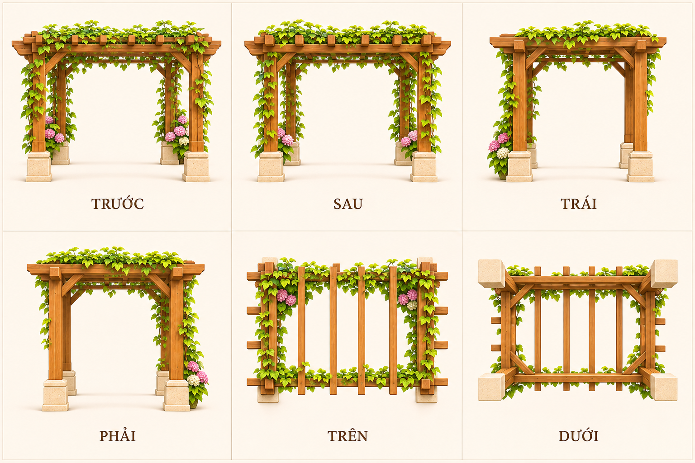
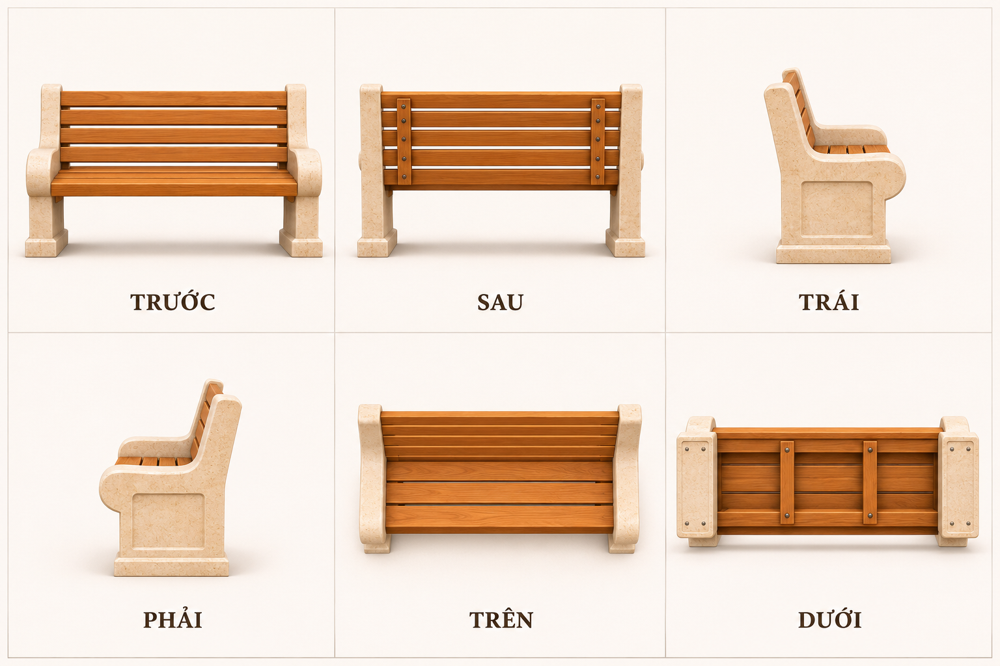
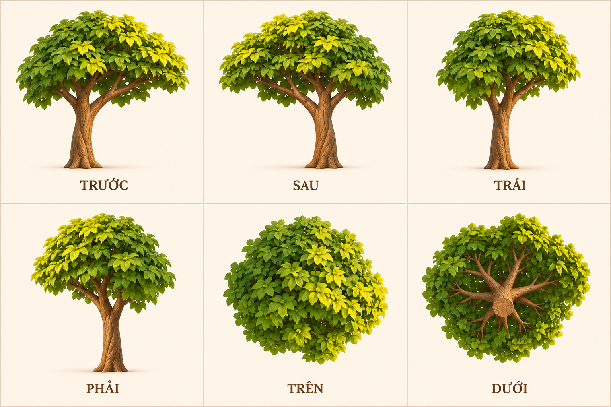
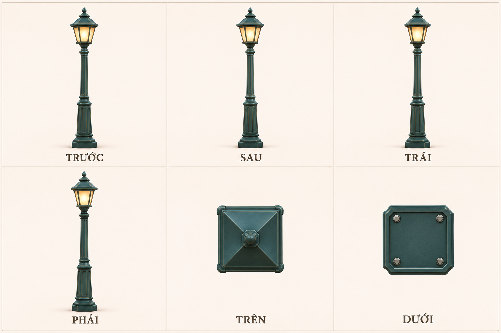
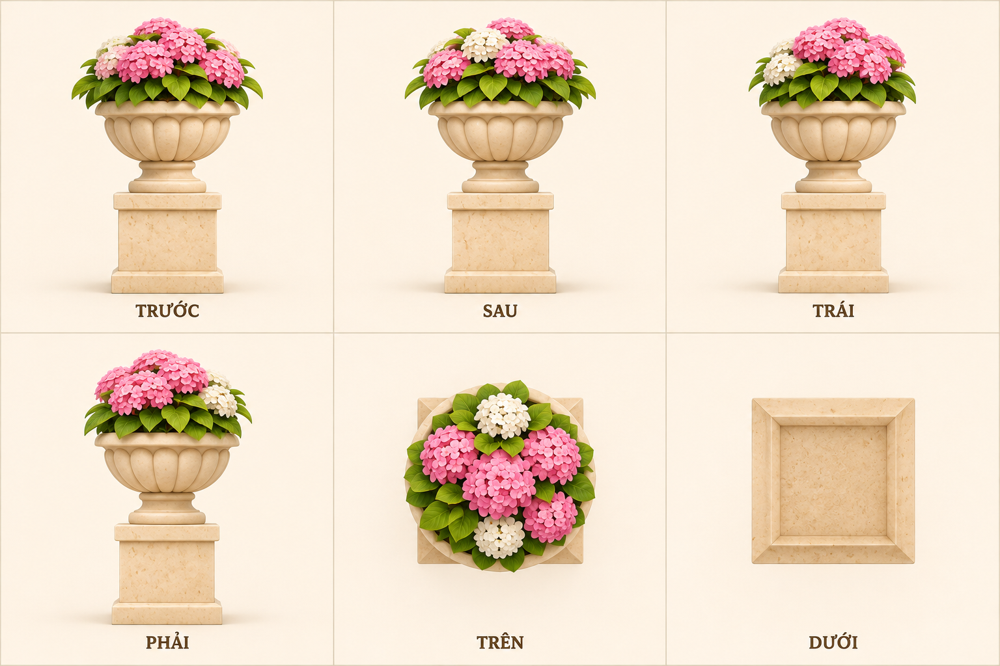
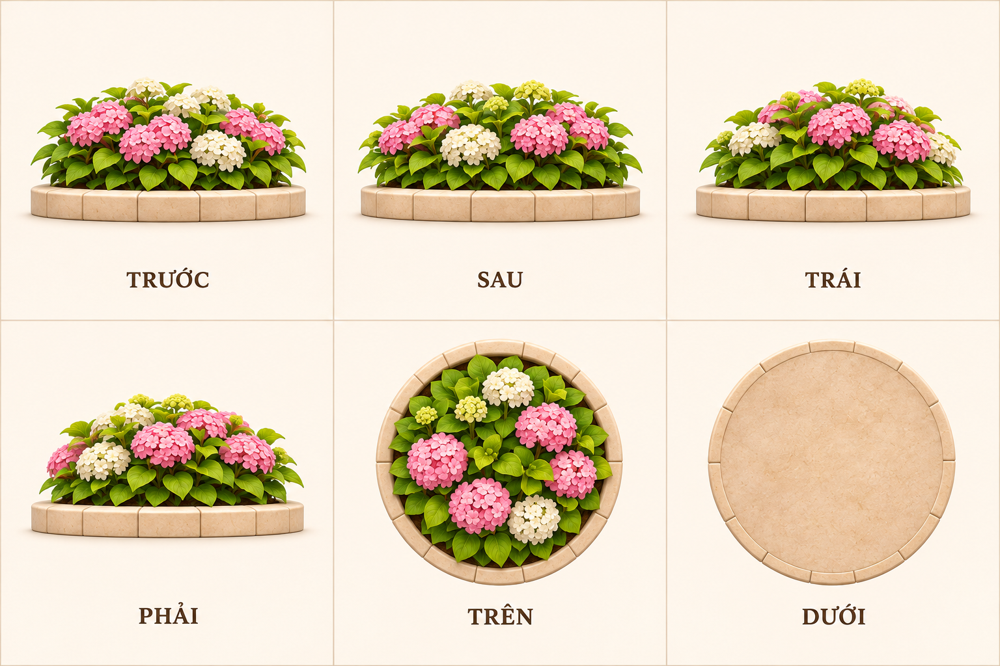
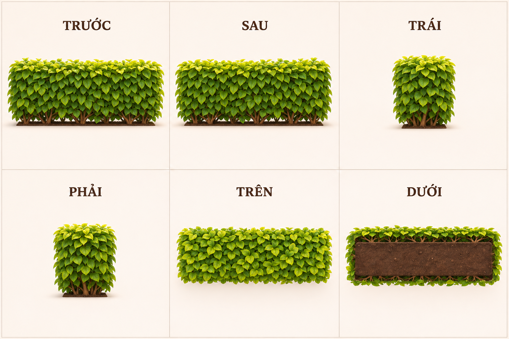
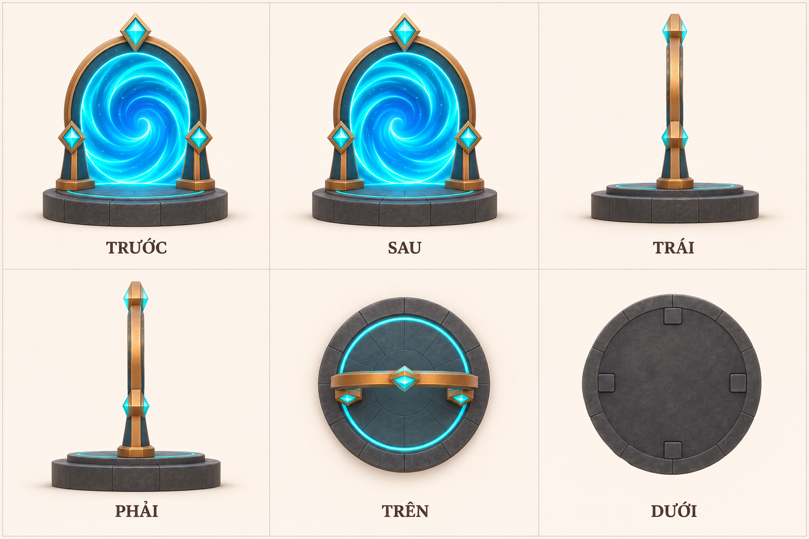
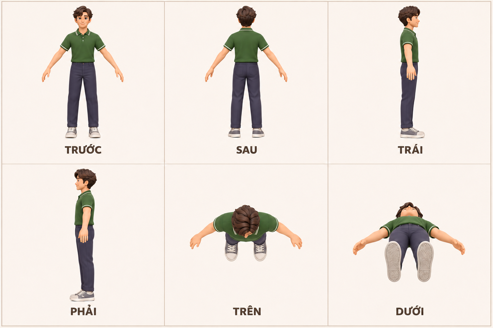
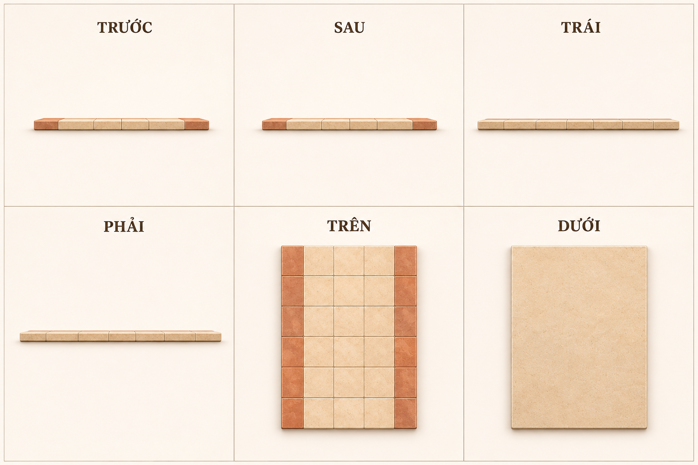